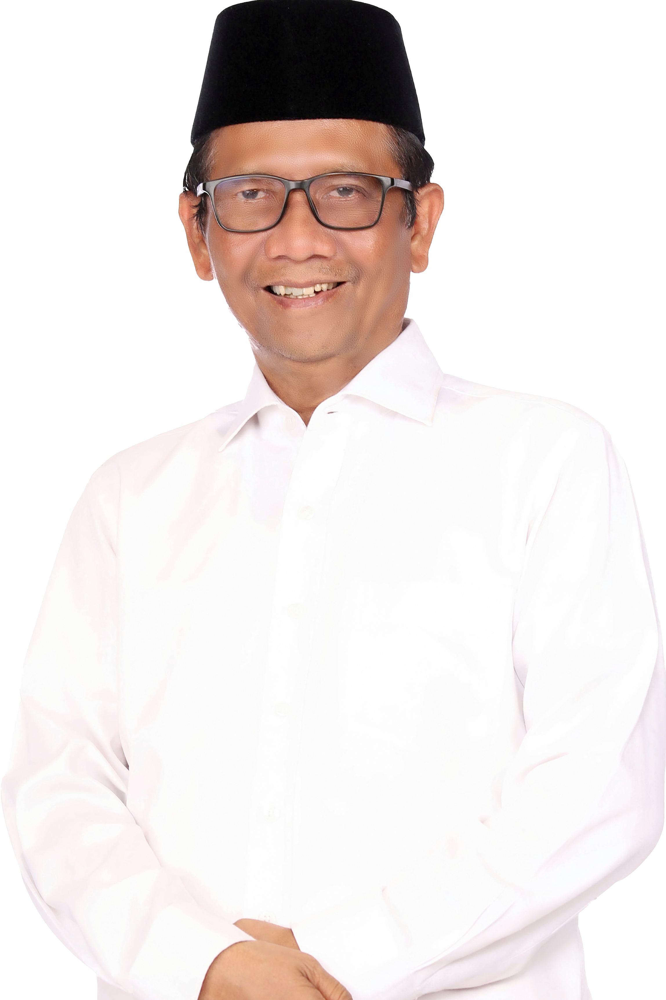

Visi : Indonesia Adil dan Makmur Untuk Semua
Misi :
Visi : Bersama Indonesia Maju Menuju Indonesia Emas 2045
Misi :
Visi : Gerak Cepat Menuju Indonesia Unggul
Misi :

ANIES BASWEDAN |
|
PRABOWO SUBIANTO |
|
GANJAR PRANOWO |
|
MUHAIMIN ISKANDAR |
|

GIBRAN RAKABUMING |
|
|

MAHFUD MD |
|
PEMILIHAN UMUM CALON PRESIDEN DAN WAKIL PRESIDEN
TAHUN 2024
GYBRANT FAHREZANIM : 10123394KELAS IF 10 |